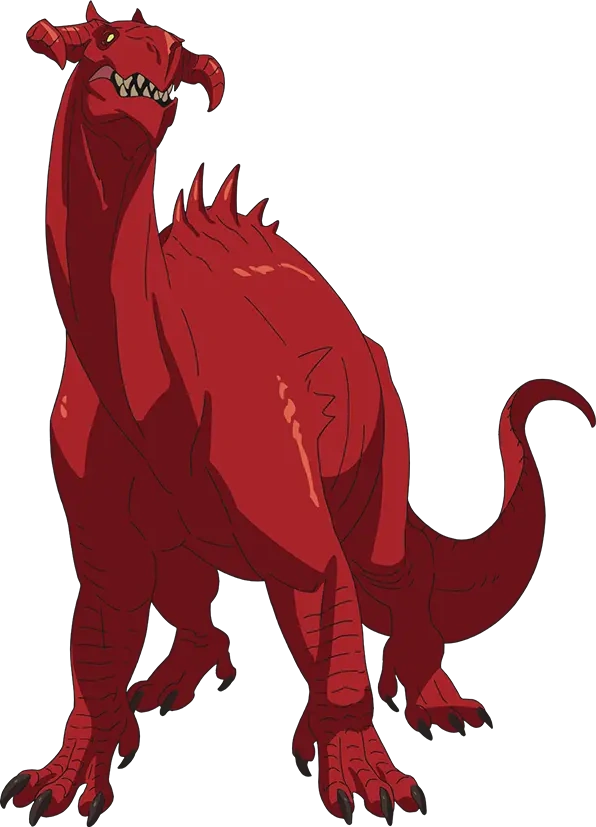
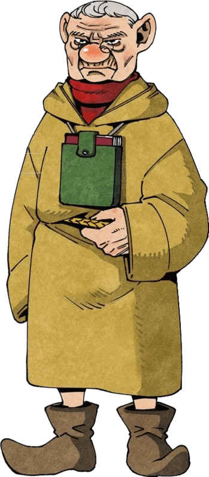

| Manga | Anime | Wiki | opening |
| | |
| Laios Touden é um dos principais protagonistas e líder de seu grupo de aventureiros. Apesar de ser menosprezado pela maioria dos personagens, Laios é um lutador incrivelmente forte e o líder do grupo. | O Mago Lunáticoé o mago responsável pela criação da masmorra em The Island . Suas ações o tornam o antagonista secundário do mangá Delicious meshi . |
|  | |
| Falin Touden é a irmã mais nova de Laios . Seu consumo por um Dragão Vermelho leva a última expedição do grupo Touden à masmorra para resgatá-la. | O dragão vermelho é uma das criações do mago lunatico o qual ronda e protege os ultimos niveis da masmorra. |
| Marcille é inteligente, íntegra e leal aos seus amigos. Apesar disso, ela também pode ser muito tensa e tem dificuldade em lidar com coisas muito fora de sua zona de conforto (como comer monstros) | Apos ser consumida pelo dragão e ressucitada por marcille, a qual ultilizou aprtes do dragão para esse feito, falin passa a ser metade humana e metade dragao apos uma modificação feita pelo mago luantico. |
 | |
| Senshi é um guerreiro anão do Partido de Laios. Como ele passou dez anos aprendendo a comer monstros na masmorra, ele pode ser muito obstinado em seus caminhos, levando a conflitos com outros membros do grupo. No entanto, como eles mostraram interesse em comer monstros, ele fica muito feliz em compartilhar suas habilidades com eles. | Grifo que assombrou senshi e seus colegas quando mais novo. O grifo acaba se tornando um hipogrifo por conta de uns cogumelos magicos que fazem uma ilusão quando pisado dentro de seus circulos. |
| Kabru é o líder de um grupo de aventureiros que deseja derrotar o Mago Louco . | Mithrun, referido mais frequentemente por seu título de Capitão Mithrun, é o capitão das Canárias enviado para lidar com a masmorra na Ilha . |
| Izutsumi, também conhecida como Asebi, é uma personagem do mangá Delicious in Dungeon. Ela é uma ex-membro dos retentores de Shuro e atualmente faz parte do grupo de Laios. | Maizuru é um dos servos de Shuro . Seu nome verdadeiro é Iyo. Maizuru é capaz de realizar magia , incluindo magia de cura e ressurreição. |
|  | |
| Leed é a irmã mais nova do chefe orc Zon e lidera o grupo de orcs no quinto andar da masmorra da Ilha. | Tansu Floke , comumente referido como Sr. Tansu, é um idoso Gnomo estudioso e usuário de magia pesquisando maldições e magias envolvidas na masmorra da Ilha . Ele parece ser o conselheiro do Senhor da Ilha em assuntos envolvendo a masmorra. Ele é casado com a Sra. Tansu , que também é acadêmica. |
| Inutade, comumente referido como Tade, é um personagem do mangá Delicious in Dungeon . Ela é membro do partido de Shuro. Seu nome verdadeiro é Hijouhi | Rinsha Fana, comumente referida como Rin, é uma personagem do mangá Delicious in Dungeon. Ela é membro do partido de Kabru. |
| Namari é um ex-membro do grupo dos irmãos Touden e um atual membro do grupo Tansu. | Zon é o chefe dos orcs na masmorra da Ilha. |
| Shuro é um ex-membro do grupo dos irmãos Touden. Seu nome verdadeiro é Toshiro Nakamoto. | Chilchuck Tims é um halfling e membro do partido de Laios . |